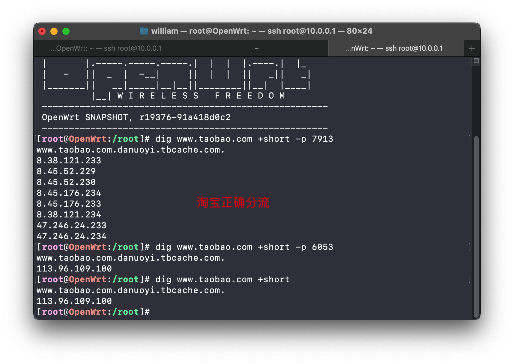

OpenWrt的编译和使用 lede仓库源码和教程 OpenWrt的编译和使用
Flippy 的 Openwrt 打包源码 Flippy 的 Openwrt 打包源码
passwall仓库 kenzok8
仓库 里面有armbian和openwrt以及内核 ophub
注意
不要用 root 用户进行编译
国内用户编译前最好准备好梯子
默认登陆IP 192.168.1.99 密码 password
编译命令
首先装好 Linux 系统，推荐 Debian 11 或 Ubuntu LTS 安装编译依赖 1 2 3 4 5 6 7 8 9 sudo apt update -y sudo apt full-upgrade -y sudo apt install -y ack antlr3 asciidoc autoconf automake autopoint binutils bison build-essential \ bzip2 ccache cmake cpio curl device-tree-compiler fastjar flex gawk gettext gcc-multilib g++-multilib \git gperf haveged help2man intltool libc6-dev-i386 libelf-dev libglib2.0 -dev libgmp3-dev libltdl-dev \ libmpc-dev libmpfr-dev libncurses5-dev libncursesw5-dev libreadline-dev libssl-dev libtool lrzsz \ mkisofs msmtp nano ninja-build p7zip p7zip-full patch pkgconf python2.7 python3 python3-pyelftools \ libpython3-dev qemu-utils rsync scons squashfs-tools subversion swig texinfo uglifyjs upx-ucl unzip \ vim wget xmlto xxd zlib1g-dev python3-setuptools
下载源代码，更新 feeds 并选择配置 1 2 3 4 5 git clone https://gi thub.com/coolsnowwolf/ lede cd lede ./scripts/ feeds update -a ./scripts/ feeds install -a make menuconfig
下载 dl 库，编译固件 （-j 后面是线程数，第一次编译推荐用单线程） 1 2 make download -j8make V=s -j1
本套代码保证肯定可以编译成功。里面包括了 R23 所有源代码，包括 IPK 的。
你可以自由使用，但源码编译二次发布请注明我的 GitHub 仓库链接。谢谢合作！
二次编译： 1 2 3 4 5 6 7 cd ledegit pull ./scripts/feeds update -a ./scripts/feeds install -a make defconfigmake download -j8make V=s -j $(nproc)
如果需要重新配置：
1 2 3 rm -rf ./tmp && rm -rf .configmake menuconfig make V=s -j$(nproc )
编译完成后输出路径： bin/targets
固件使用说明： 默认IP： 192.168.1.1 默认密码： password
1 iptables -t nat -I POSTROUTING -o eth0 -j MASQUERADE
也可以尝试（有桥接存在的情况下）
1 iptables -t nat -I POSTROUTING -o br-lan -j MASQUERADE
AdguardHome: 固件里不包含，可以用docker方式安装, 可以双开甚至多开，灵活性很强，升级也不依赖于固件，直接用docker命令升级。
small仓库的使用 一键命令
1 2 3 4 5 6 sed -i '$a src-git kenzo https://github.com/kenzok8/openwrt-packages' feeds.conf .default sed -i '$a src-git small https://github.com/kenzok8/small' feeds.conf .default git pull ./scripts/feeds update -a ./scripts/feeds install -a make menuconfig
注意
编译新版Sing-box和hysteria，需golang版本1.20或者以上版本 ，可以用以下命令
1 2 3 pushd feeds/packages/ lang rm -rf golang && svn co https://gi thub.com/openwrt/ packages/branches/ openwrt-23.05 /lang/g olang popd
smartdns 部分直接 vim 编辑 /etc/config/smartdns 照抄即可，无需手动设置，配置完记得界面上点击保存应用，或者uci命令刷新配置，我里面有杭州电信的DNS服务器，不是杭州的记得自己改掉，否则可能有负面效果。
1 2 3 4 5 6 7 8 9 10 11 12 13 14 15 16 17 18 19 20 21 22 23 24 25 26 27 28 29 30 31 32 33 34 35 36 37 38 39 40 41 42 43 44 45 46 47 48 49 50 51 52 53 54 55 56 57 58 59 60 61 62 63 64 65 66 67 68 69 70 71 72 73 74 75 76 77 78 79 80 81 82 83 84 85 86 87 88 89 90 91 92 config smartdns option server_name 'smartdns' option port '6053' option tcp_server '1' option seconddns_tcp_server '1' option coredump '0' option seconddns_server_group 'passwall' option seconddns_no_speed_check '1' option seconddns_no_dualstack_selection '1' option prefetch_domain '1' option ipv6_server '0' option force_aaaa_soa '1' option dualstack_ip_selection '1' option serve_expired '1' option redirect 'dnsmasq-upstream' option rr_ttl_min '300' option seconddns_port '7913' option seconddns_enabled '1' option seconddns_no_rule_nameserver '1' option seconddns_no_rule_addr '0' option seconddns_no_rule_soa '0' option seconddns_no_rule_ipset '0' option cache_size '300' option seconddns_no_cache '1' option enabled '1' list old_redirect 'dnsmasq-upstream' list old_port '6053' list old_enabled '1' config server 'aliyun' option ip '223.5.5.5' option port '53' option type 'udp' option blacklist_ip '0' option server_group 'cn' option enabled '1' config server '114' option ip '114.114.114.114' option port '53' option type 'udp' option blacklist_ip '0' option server_group 'cn' option enabled '1' config server '1' option type 'udp' option name '电信' option ip '202.101.172.35' option port '53' option server_group 'cn' option blacklist_ip '0' config server '1' option type 'udp' option name '电信' option ip '202.101.172.47' option port '53' option server_group 'cn' option blacklist_ip '0' config server type 'udp' option port '53' option name 'DNSPod' option ip '119.29.29.29' option blacklist_ip '0' option server_group 'cn' option enabled '1' config server '1' option name 'cloud' option ip '1.1.1.1' option port '853' option type 'tls' option server_group 'passwall' option blacklist_ip '0' option addition_arg ' -exclude-default-group' config server '1' option type 'udp' option name 'CNNIC SDNS' option ip '1.2.4.8' option port '53' option server_group 'cn' option blacklist_ip '0'
如何验证？ 登录路由器 使用 dig 或者 nslookup 检查下各端口的DNS以及分流情况
1 2 3 nslookup www.taobao .com 127.0 .0.1 :7913 返回的是节点对应淘宝最快的IP nslookup www.taobao .com 127.0 .0.1 :6053 返回的是国内最快的IP nslookup www.taobao .com 应该是国内

注：如果手动查询规则列表内的域名，使用端口6053，然后匹配规则，转发给7913，然后被缓存住。（国外因为跳过测速，所以多个域名是正确的）